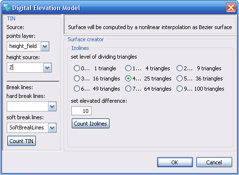
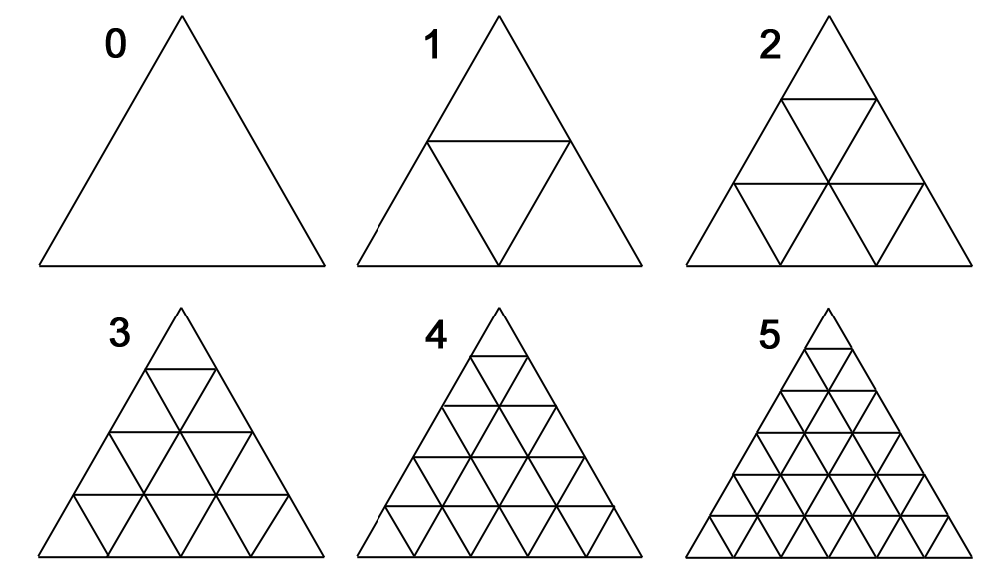

DEM - Digital Elevation Model

DEM is tool which provides some 3D spatial operations:
- creating TIN (Triangulated Iregullar Network)
-
creating izolines from TIN
At first you must create TIN. At the left side of toolbox you must choose source points layer. TIN will be counted in 2D from geometry (X,Y coordinates) of shapefile. Coordinate Z you must choose from attribute table of the same shapefile. This is cell height source.
1.2 Break Lines
At this part you may set layer of break lines. Hard break lines are lines, where the surface will have sharp break. Soft break lines are lines, where surface will have soft break as crest line.
Attention: input layer of break lines has to contains lines which have
same points as the source points layer. If the input break line doesn't
contain same points, it will not be counted to final TIN.
If you have selected sources, you may use button Count TIN and new TIN will be add as a new temporary layer. If you want to save it as shapefile, you must export it.
2. Surface creator
2.1 Izolines
When
you have comlpleted TIN, you may count izolines. At first you must set
a level of dividing triangles as you can see at the picture. Number of
triangles determines level of smoothing surface. Be carefull,
because when you set high level, the data structure will be
monstrous.
2.2 Set elevated difference
Last step of exctracting izolines is setting of elevated difference
between izolines. Unit is same as weight source. Standart value for it
is 10.
If you have all selected, you may use button Count Izolines and new izolines will be add as a new temporary layer. If you want to save it as shapefile, you must export it.
have a nice work :)